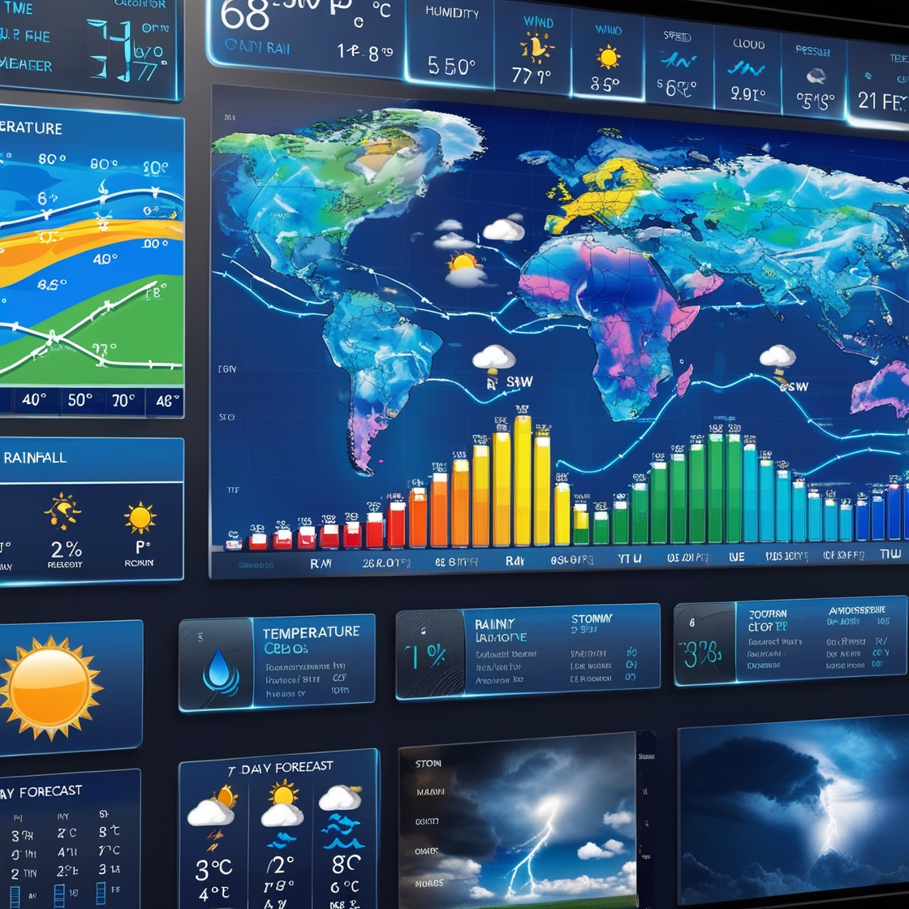

Our weather prediction website provides comprehensive insights into upcoming weather conditions using advanced forecasting methods and statistical analysis. Whether you're planning a trip, scheduling outdoor activities, or just staying informed, we bring you accurate and easy-to-understand weather predictions.
Why Accurate Weather Prediction Matters
Accurate weather forecasting helps individuals, businesses, and communities plan effectively, avoid risks, and make informed decisions. Explore our resources on predictive methods and how they apply to different seasons and geographical areas.
Featured Weather Prediction Techniques
Satellite Imaging
Tracking large-scale weather patterns from space.
Historical Data Analysis
Using historical weather data for trend analysis.
Artificial Intelligence Models
Utilizing AI to improve prediction accuracy.
Real-Time Weather Data
Stay up-to-date with the latest weather trends and predictions for your area.

Engage With Us
Check out our visual data, charts, and prediction graphs in our interactive sections. Contact us to learn more about our methods or share your feedback.